フリーのビジュアルノベルアセットFungusを使ってRPGのイベントを作る
この記事はUnity #2 Advent Calendar 201713日目の記事です。
概要
Fungusはフリーで使えるビジュアルノベルアセットです。
簡単な概要についてはフリーのビジュアルノベルアセットのFungusが便利で紹介しています。
今回はこのFungusを使って、シーン切り替えありのRPGのイベント処理を作りたいと思います。
いわゆる、おつかいイベントを実装します。こんなのを作ります。
Flowchart作成
とりあえず、町と人を適当に配置し、操作用にStandard AssetsのFPSControllerを配置したとします。
ToolsメニューからFungusのフローチャートを作成します。
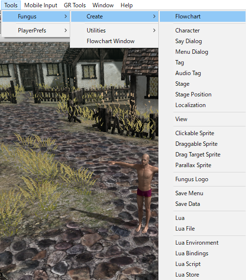
ここで、町の人に話しかけたときのイベントを実装します。新しくブロックを作成し、ブロック名を設定します。
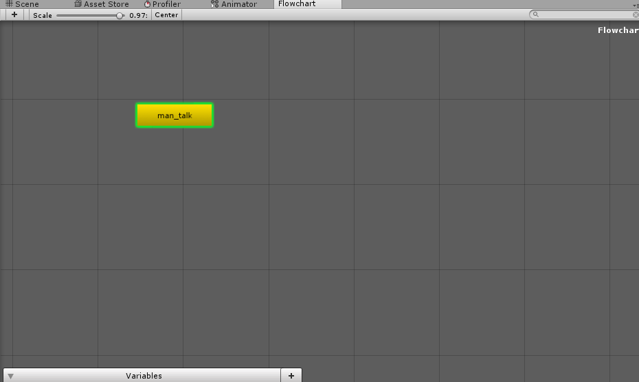
町の人に話しかけたときにこのブロック名を指定して呼ぶことによって会話を始めます。
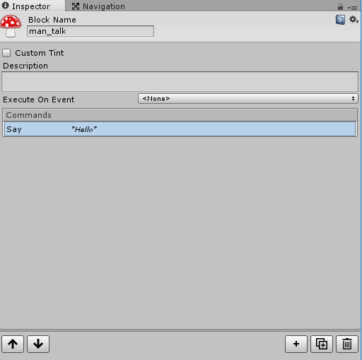
町の人のイベントトリガーを作成
Flowchartのblock名を保存するだけのクラスを作り、町の人につけます。
public class BlockTrigger : MonoBehaviour {
public string blockName;
}
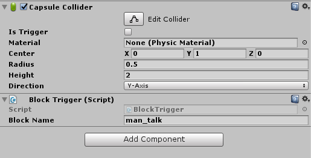
話しかける/調べるを実装
特定のキーを押したらRayを飛ばして、ぶつかったオブジェクトが上記のBlockTriggerを持っていたら、FungusのFlowchartのblockを実行します。
これをFPSのカメラにAddすれば、見ている方向を調べるコマンドが実装できます。
public class CheckCommand : MonoBehaviour {
[SerializeField]
float rayLength = 3f;
Flowchart flowchart;
void Start() {
flowchart = FindObjectOfType<Flowchart>();
}
// Update is called once per frame
void Update() {
if (Input.GetKeyDown(KeyCode.E)) { //Eキーに調べるコマンドを割り当てる
Ray ray = new Ray(transform.position, transform.forward);
RaycastHit hit;
if (Physics.Raycast(ray, out hit, rayLength)) {
//衝突したものがBlockTriggerを持っているか調べ、持っていたらそのblockを実行する
var trigger = hit.transform.GetComponent<BlockTrigger>();
if (trigger != null) {
flowchart.ExecuteBlock(trigger.blockName);
}
}
}
}
}
こんな感じで町の人を向いてキーを押すことによってFungusのblockを実行できました。
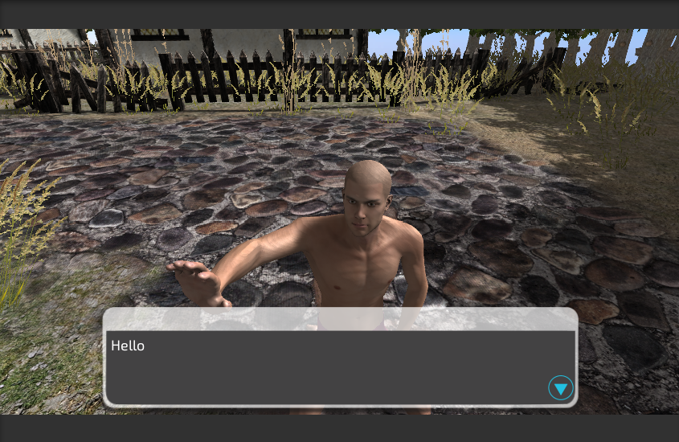
しかし、このままではメッセージが表示されている間もプレイヤーが移動できてしまいます。
Fungusが動いている間は移動できないように制限しましょう。
Flowchartオブジェクトに以下のようなクラスを追加して実現します。
public class FlowchartExecution : MonoBehaviour {
Flowchart flowchart;
FirstPersonController fpc;
void Start() {
flowchart = GetComponent<Flowchart>();
//Standard AssetsのFPSのコントローラを取得する
fpc = GameObject.FindGameObjectWithTag("Player").GetComponent<FirstPersonController>();
}
void Update() {
//実行中のフローチャートがあるかチェックし、あれば移動を不可にする
if (flowchart.GetExecutingBlocks().Count == 0) {
fpc.enabled = true;
} else {
fpc.enabled = false;
}
}
}
上記コードだと１点問題があり、選択メニューを表示しているときに動けてしまいます。
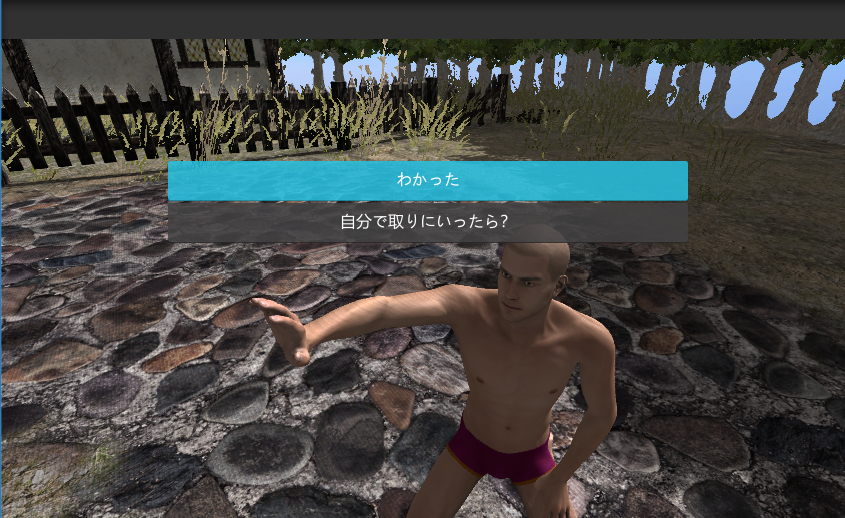
選択メニュー表示中はどこのblockも実行していない待ち状態だからです。
また、FPSコントローラを使用しているとマウスのカーソルがロックされているため、メニューを選択できません。
それらを考慮して上記のコードを改良したのが以下です。
void Update() {
var menuDialog = GameObject.Find("MenuDialog"); //メニュー表示中か判定用
if (flowchart.GetExecutingBlocks().Count == 0 && menuDialog == null) {
fpc.enabled = true;
fpc.SetCursorLock(true); //マウスをカーソルロック
} else {
fpc.enabled = false;
fpc.SetCursorLock(false); //マウスのカーソルロックを解除
}
}
コマンドについて
Fungusの各ブロックのコマンドですが、これに関しては見たままなのでここでは特に記載することはありません。
例えば、ドアの処理では以下のように、音を出す→フェードアウト→シーン切り替え とやれば自然になります。
このとき、次シーンの開始時にフェードインコマンドを実行する必要はあります。
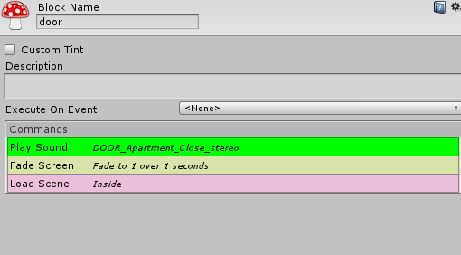
コマンドで表現できないものはソース書いてスクリプト実行コマンドを使ったりします。
冒頭の動画にあるようなクエスト完了時のカットシーン的なのもFungusでオブジェクトのアクティブを切り変えたり、iTweenコマンドで動かしたりして実装しています。
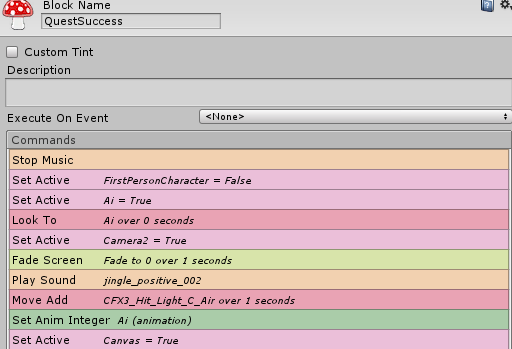
セーブについて
町の外でフラグを立てて、シーンを切り替えて建物の中でそのフラグを判定します。
flowchartで変数の管理はできます。
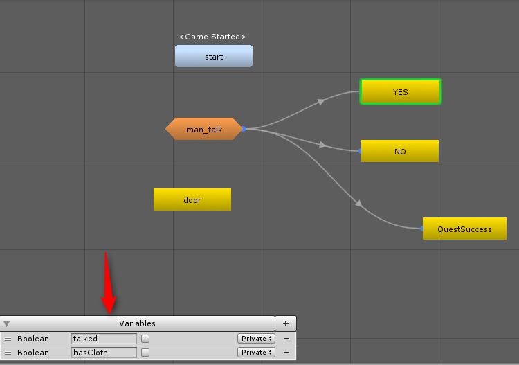
しかし、シーン切り替えが入るので、Fungusのflowchartの変数の値をどこかに保存しないといけません。
幸い、変数のセーブ機能はあります。しかし、変数一つ一つにコマンドを実行しないといけないので結構つらさがあります。
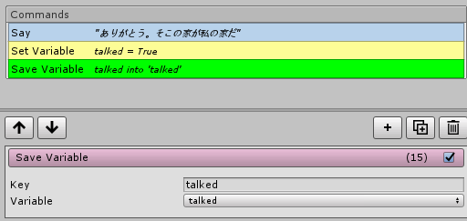
ロードに関しても同様です。
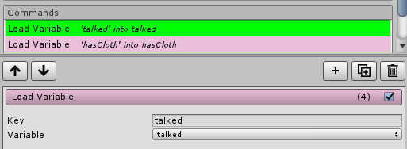
また、保存先はPlayerPrefsなので利用シーンによっては改良する必要があります。
まとめ
セーブ周りがちょっとしんどいですが、簡単なイベントを作るにはFungusは便利です。
RPGツクールを触っていた人間からすると、これが一番しっくりきたアセットでした。
使用バージョン
Unity 5.6.4f1
Fungus 3.6.0